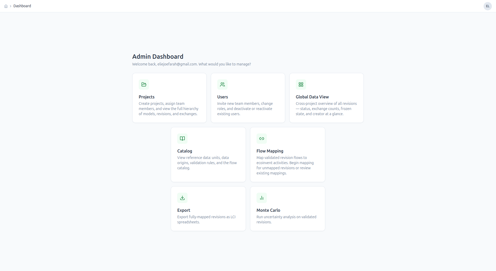
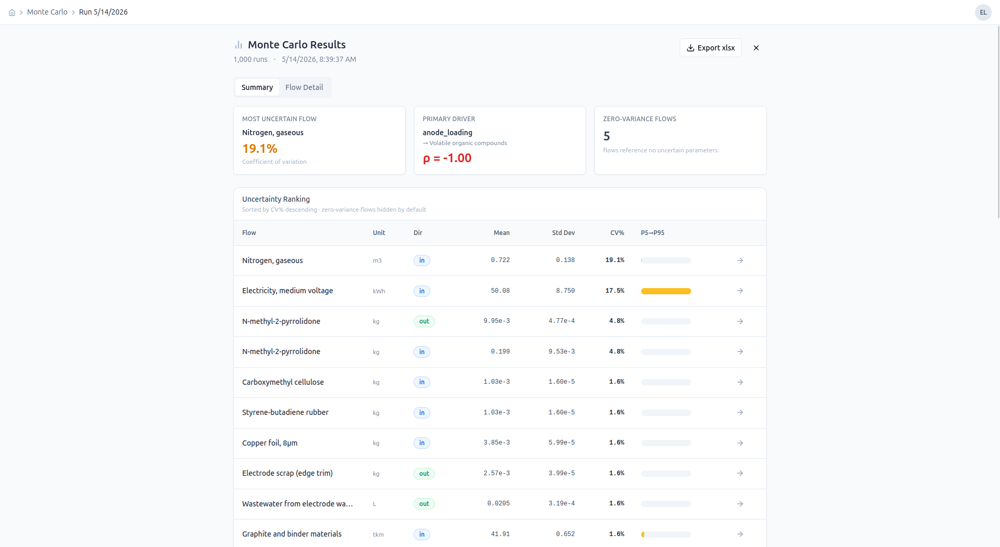
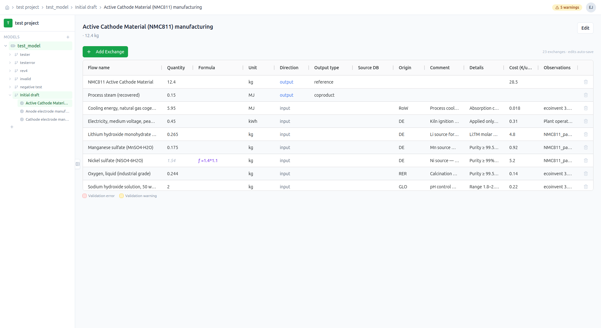
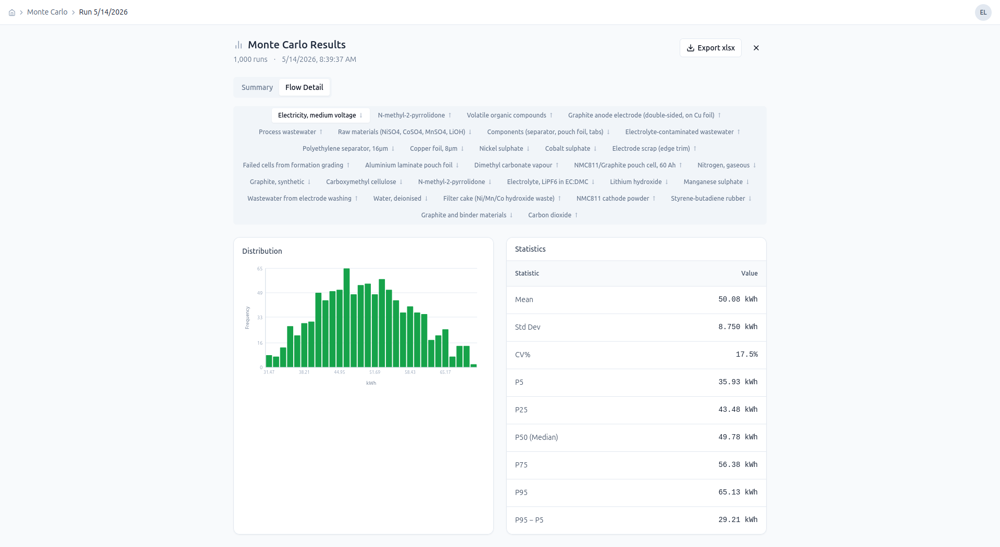

BatteryLCATool
A multi-tenant research platform for battery life-cycle inventory modeling, replacing shared spreadsheets with structured data, role-based access, and built-in statistical simulation.

Admin dashboard — entry point for managing projects, users, flow mapping, export, and Monte Carlo runs.
The Problem
Life-cycle assessment data for battery research is heterogeneous and typically managed in shared Excel workbooks — no version control, no access control, and no structured connection to the ecoinvent background database. Researchers at VUB needed a system that could handle multi-user inventory modeling, enforce role-based access between manufacturers and admins, and integrate Monte Carlo uncertainty propagation without requiring manual re-entry into separate statistical tools.
What I Built
The platform has two distinct user roles with different interfaces and permissions. Manufacturers model process inventories manually or via Excel import; admins map flows to the ecoinvent database and export structured workbooks to Supabase Storage. A Monte Carlo simulation engine sits behind an API endpoint and runs parameterized uncertainty distributions on any saved inventory.
Excel Import Flow
Manufacturers upload existing inventory workbooks. The backend parses structured sheets, validates unit compatibility, and maps flows to the ecoinvent schema — surfacing conflicts as actionable errors rather than silently discarding data.
Monte Carlo Simulation
After an inventory is finalized, users run Monte Carlo simulations across configurable uncertainty distributions on each flow. Results are visualized as distribution plots with Spearman-ranked sensitivity scores highlighting which parameters drive the most variance.

Structured Inventory Entry
Each process in a revision has a full exchange table — flow name, quantity, formula, unit, direction, source database, geographic origin, and cost. Quantities can reference named parameters via formula strings, enabling parameterized models where changing one value propagates across all linked exchanges.

One Interesting Decision
The simulation engine uses Spearman rank correlation rather than Pearson for sensitivity analysis. LCA input parameters — emission factors, energy consumption figures — are often non-normally distributed and bounded. Pearson correlation assumes linearity and normal distributions; it breaks down for the skewed values that show up in real industrial data. Spearman operates on ranks, making it robust to outliers and asymmetric distributions, and produces more reliable sensitivity rankings that tell researchers which parameters are actually worth refining.

Per-flow distribution — mean, std dev, and P5–P95 range for electricity consumption across 1,000 simulation runs.
What I'd Do Differently
The frontend state management grew complex as features were added — I'd introduce React Query for server state and a lightweight store for UI state earlier, rather than threading callbacks through component trees. I'd also design the database schema for multi-version inventory snapshots from day one; retrofitting versioning after the core schema is settled is painful and forces migration work that could have been avoided.